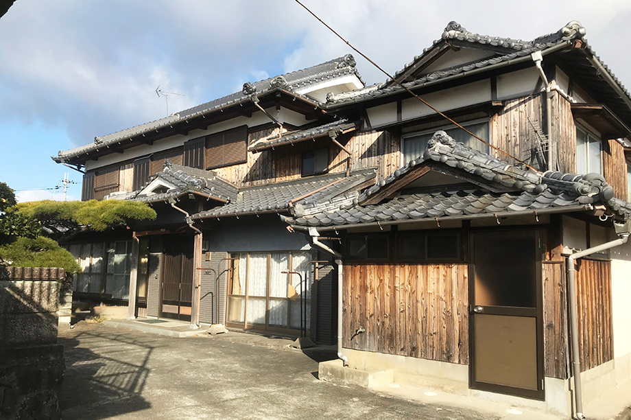
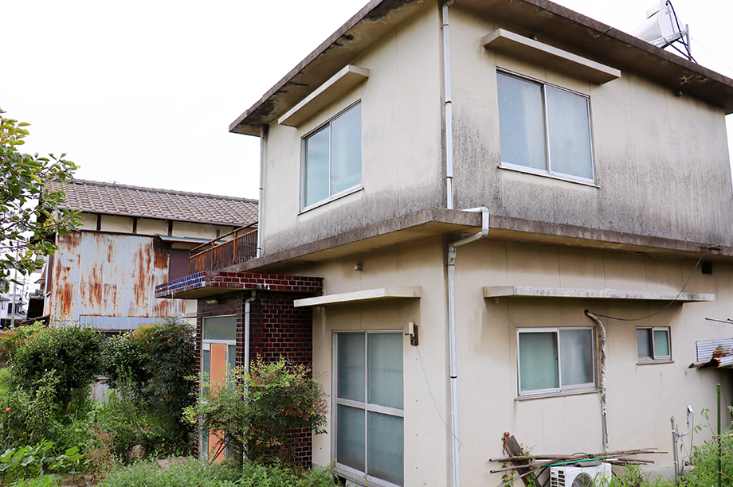

相続を「する側」の方が
生前対策が必要な理由
- TOP
- 相続を「する側」の方が生前対策が必要な理由
souzoku 4相続する側から見た生前対策の重要性
相続する側の方が亡くなってからできる相続対策はごくわずかです。一方で存命中に生前対策を進めると、後に起こり得る家族・親族間の「争族」を防げるほか、相続税の負担を減らしてスムーズな相続を後押しできます。
こちらでは、相続する側ができる生前対策の方法を4つご紹介します。ご不明点やお悩みは市川市の南口不動産にご相談ください。当社は司法書士や会計士とのネットワークを持ち、相続対策と並行して不動産売却・不動産買取・不動産管理などを行います。
「相続する側」にとって生前対策が重要な理由

遺産相続をする側が生前対策を行うと、相続人同士が揉める「争族」を回避しやすくなります。さらに大切な家族に課せられる相続税を減らせる可能性もあり、相続したい財産を放棄せざるを得なくなるといったリスクを減らすことも可能です。
遺産相続のタイミングは予期せず訪れます。突然の事故や病気で昏睡状態に陥ったり、認知症を患ったりして自身の意思を伝えられなくなるケースも珍しくありません。体力に余裕があるタイミングで以下のような生前対策を行い、家族・親族にのしかかる相続トラブルを防ぎましょう。
| 種別 | 具体的な手法・手段 |
|---|---|
| 争続対策 | 遺言書の作成、家族との面談、財産継承など |
| 納税資金対策 | 不動産売却、生命保険への加入など |
| 相続税対策 | 生前贈与、相続税資産や財産状況の把握など |
相続する側が今から取り組むべき生前対策
今から取り組むべき生前対策として重要なのは、「財産の把握」「生前贈与」「遺言書の作成」「家族信託」の4つです。それぞれの詳細は後述しますが、これらの対策をとることにより財産の承継先が明確になり、相続発生後のトラブルを避けやすくなります。
相続する側の方が亡くなってからできる相続対策はほとんどありません。対策を一切行わずに亡くなると、相続に関するご自身の希望を叶えにくくなります。相続する側が存命で健康なうちに対策を取り、スムーズかつ希望どおりの相続が叶うように準備しましょう。
相続する側ができる4つの生前対策とは
相続する側が生前対策としてできるのは、主に「財産の把握」「生前贈与」「遺言書の作成」「家族信託」の4つです。これらの対策は相続する方が亡くなったり、認知症の発症などにより判断能力を失ったりした後では行えません。それぞれの生前対策を詳しくご紹介するので、できるだけ早く相続のプロに相談しながら対策を進めましょう。
財産の把握
まずは相続財産の内容を把握します。どこにどんな財産があるのかを調査して、内容と総額をリストアップしながらまとめましょう。この作業がいわゆる「資産の棚卸し」です。
財産の種類はさまざまで、例えば不動産なら「土地」や「建物」があります。金銭は「現金」だけでなく定期預金を含めた「預貯金」をすべて調べ直しましょう。「株式」「投資信託」「社債」などの有価証券も財産の一種ですし、「借地権」などの権利関係、「自動車」「宝石類」「骨董品」などの動産も財産に含まれます。
生前贈与

相続する側が存命の間に、特定の相続人へ財産を寄贈するのが「生前贈与」です。特に不動産の生前贈与は節税効果が高く、制度の活用を検討する価値があります。
相続税は2013年に税制改正が行われ、基礎控除額が以前と比べて減少しました。一方で生前贈与にかかる贈与税には変わりがありません。相続する側が亡くなってから相続を行って「相続税」を支払うよりも、相続する側が亡くなる前に相続を行って「贈与税」を支払うほうが節税効果は強まる可能性があります。
遺言書の作成
遺言書を作成すると、相続する側の意思を最優先にした遺産相続が行われます。遺言書なしで遺産相続を行う場合、相続される側が話し合いをして相続する財産の内容や割合を決めなければなりません。これが争族の原因になるのです。
ただし、遺言書は法律に則って作成しなければ無効になるため注意しましょう。不備を避けるためには「公正証書遺言」の作成がおすすめです。これは遺言書のプロである公証人が作成する遺言書なので、無効になるリスクはほぼありません。
家族信託
家族信託とは、何らかの事情により自分で管理できなくなった遺産を管理する権利を、特定の家族や親族に託す制度です。例えば親（委託者・受益者）と子（受託者）の間で家族信託を結ぶ場合、存命中の財産管理はすべて子に委託し、それにより得た利益は親が受け取れます。
認知症などにより判断能力を失ったとしても、財産をどのように扱うのかを受託者に一任できることが家族信託のメリットです。家族信託により、「被相続人の意思が分からずに遺産分割協議が進まない」「遺産を第三者に乗っ取られる」といったトラブルを回避できます。
南口不動産は特有のネットワークで司法書士や会計士もご紹介できます
南口不動産は長年にわたり市川市で不動産売却を行ってまいりました。取引を通してさまざまなネットワークを構築しており、相続問題に関しては経験豊富な司法書士や会計士のご紹介が可能です。
相続対策の検討を始めたら、まずは南口不動産にご相談ください。専門家と連携しながらお持ちの財産を分析し、有効な生前対策をご提案します。不動産に関しては、売却はもちろんのこと、不動産管理や贈与のサポートなどあらゆるメニューをご用意しております。